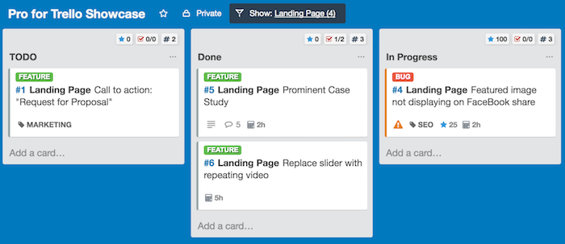
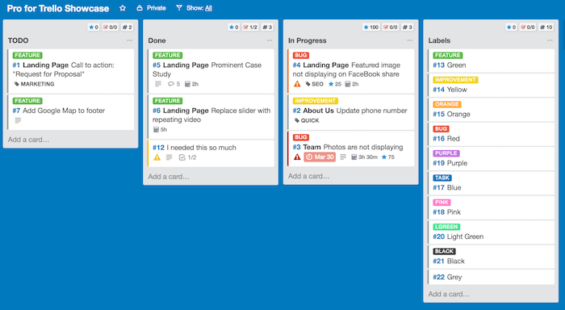
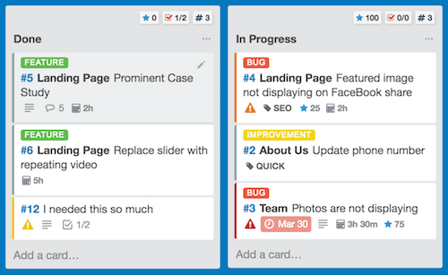
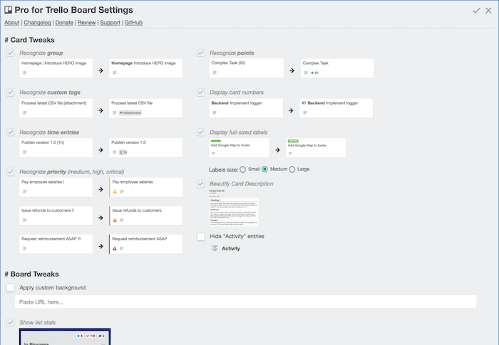

An even better, faster and more stable Trello experience powered by community feedback!
Yes - there were some issues when loading the extension. Sometimes cards would dissapear, sometimes the Pro4Trello menu wouldn't appear. But that's all in the past. And it all just works so much faster now
When you filter cards by groups/projects - your choice is now saved across your Chrome browsers, just like other board settings. There's also a nice indicator when a filter is active.

Some fine CSS tuning for your Trello boards, streight from the community. You can now make your board very classy and compact:

Again from the busy but creative community of Pro4Trello users:

No more tabs - just the one, easy scrollable settings page:
